Every claim carries one of four labels. A recruiter should be able to tell at a glance what is known, what is estimated and what is being proposed.
AeroRun can win the under-₹7,000 style buyer. ₹1,00,000 won't build that position, but it can prove which message, creator and audience will.
India's sneaker market is estimated at roughly US$3.2–4.0 billion, growing at about 5.5–5.9% a year [S1, S2] Verified. Nike is the most aspirational global name but not the biggest in India: reported FY25 revenue was about ₹1,381 crore for Nike India against about ₹3,259 crore for Adidas India [S3] Verified. Each competitor's lifestyle icon lists at ₹6,999 or more, and two of them list above ₹10,000 [S12] Verified.
“Light on your feet. Loud on your feed.” Position AeroRun as the most affordable way into an iconic-brand look. Launch it Reels-first through five micro-creators, test three creative angles (style, comfort, value) and back the winner with the held-back reserve Recommendation.
Under assumed Indian Meta benchmarks, the base case gives about 1,50,796 people reached, 3,055 landing-page views and 28 purchases. That means a media cost per acquisition (CPA) of ₹1,816, or ₹3,571 once creators and content are counted Assumption. At about 5 purchases a week, Meta's sales optimisation can't leave its learning phase, which needs roughly 50 optimisation events per ad set per week [S24]. So the campaign is designed to learn, not to make a profit Recommendation.
Business problem: How might a fictional ₹5,999 Nike sneaker win a place in the consideration set of style-driven 18–25 metro buyers, who currently default to Puma's accessible style or the Adidas and New Balance trend pairs, with only ₹1,00,000?
| Indicator | Figure | Source | Label |
|---|---|---|---|
| India sneaker market | US$3.98 bn (2025) → US$6.53 bn (2034), 5.65% CAGR | [S1] | Verified |
| India sneaker market (alt. estimate) | US$3.20 bn (2024) → US$4.49 bn (2030), 5.87% CAGR | [S2] | Verified |
| What we use | A range of US$3.2–4.0 bn, because the estimates differ by base year and method | — | Assumption |
Research firms disagree by about 25% on market size. A good analyst shows the range instead of picking the most flattering number. For a ₹1 lakh launch the exact size barely matters. What matters is that the category is large and growing, and that the 18–25 buyer is reachable on Meta.
| Indicator | Figure | Source | Label |
|---|---|---|---|
| Adidas India Marketing revenue | ≈ ₹3,259 crore (FY25) | [S3] | Verified |
| Puma India revenue | ≈ ₹3,274 crore (CY2023); ₹2,980 crore (CY2022) | [S4] | Verified |
| Nike India revenue | ≈ ₹1,381 crore (FY25), reported up 14% year on year | [S3, S6] | Verified |
| Decathlon India revenue | > ₹4,000 crore (FY24), a value-sport player bigger than all three | [S5] | Verified |
| Nike India e-commerce | Operated with Nykaa as local service partner; Nike.in relaunch dated 30 Jan 2026 | [S6] | Verified |
Puma reports on a calendar year and the others on an April–March year, so the figures aren't perfectly comparable. All figures are press reports of company filings; before external use, cross-check them on the MCA portal.
| Signal | Evidence | Source | Label |
|---|---|---|---|
| Instagram reach in India | ≈ 414 million users (Jan 2025, Meta ad-tool data) | [S13] | Verified |
| Age skew | 18–24 is the largest Instagram age group in India | [S14] | Verified |
| Gen Z discovers online | ≈ 70% of Gen Z shoppers discover brands online; Gen Z ≈ 40% of e-retail shoppers | [S15] | Verified |
| Social as discovery | ≈ 8 in 10 Indian shoppers discover products on social media (Meta-commissioned) | [S16] | Verified |
| Price sensitivity | Gen Z average purchase value on fashion platforms is about half that of millennials | [S18] | Verified |
| Trust problem | ≈ 1 in 5 online shoppers received a fake product in 12 months; shoes among the top categories | [S21] | Verified |
| Creator economy | Influencer marketing ≈ ₹3,000–4,500 crore (2025 estimates) | [S19, S20] | Verified |
Decision. Treat the 18–25 metro buyer as reachable and style-motivated but price-cautious and trust-anxious. The trust and price signals shape the strategy as much as the reach data does.
Alternatives considered. Lead with the market-size story (“a $4 bn market!”); use one market-size number.
Why. Market size impresses nobody in an interview. The useful insight is the gap between AeroRun's price and competitors' icons, plus the counterfeit fear that blocks online purchase. Showing the range of estimates proves you can handle conflicting data.
Each competitor wins on something different. None of them owns “iconic big-brand style under ₹6,000”.
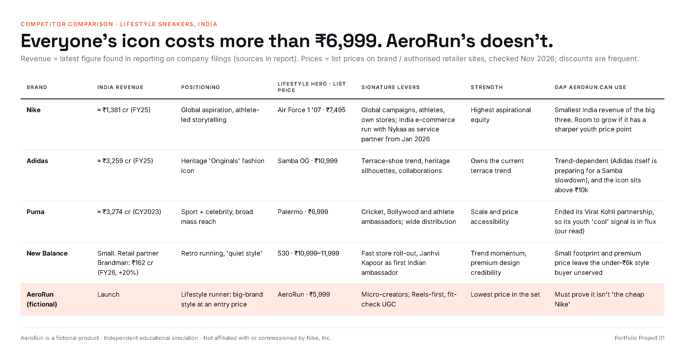
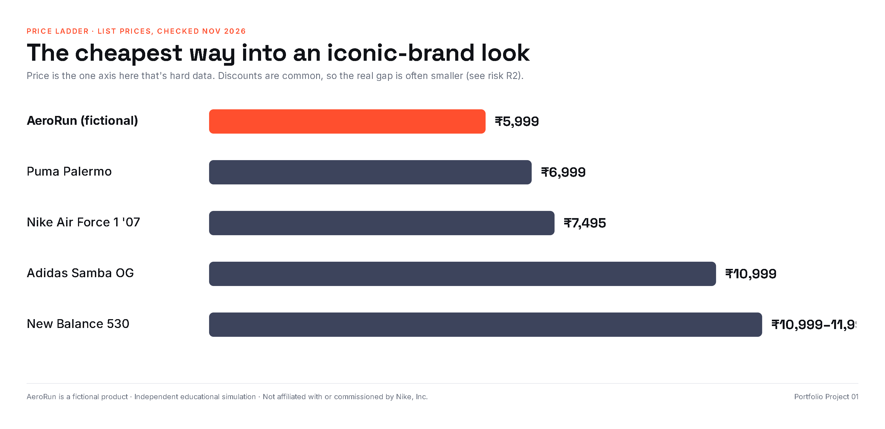
Reading the table. Puma's scale comes from accessible pricing and celebrity and cricket marketing, but its long Virat Kohli partnership has ended [S10] Verified. Adidas owns the terrace trend and is already preparing for a Samba slowdown [S11] Verified. New Balance is growing fast from a small base: its retail partner reported ₹162 crore revenue (+20%) for FY26 and plans a fivefold store expansion [S8], with Janhvi Kapoor as its first Indian ambassador [S9] Verified. Nike has the strongest aspiration but trails in India revenue and has a history of shrinking its store network [S3, S7] Verified.
Decision. Benchmark AeroRun against each rival's lifestyle icon, not their whole range.
Alternatives considered. Compare against cheaper entry models (sub-₹4,000 Nike, Puma and Adidas runners) or against unbranded D2C sneakers.
Why. The 18–25 style buyer compares the shoe they'd be seen in. Against entry runners AeroRun looks expensive; against the icons it looks like smart value. Choosing the comparison set is itself a positioning decision.
Three proto-personas built from the secondary research and your initial hypotheses. They are starting points to validate, not findings.
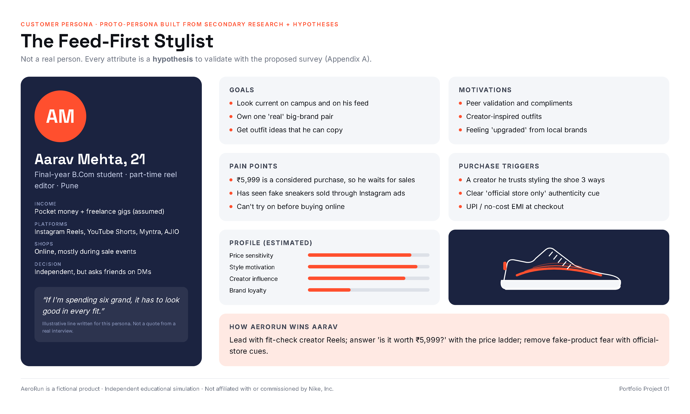
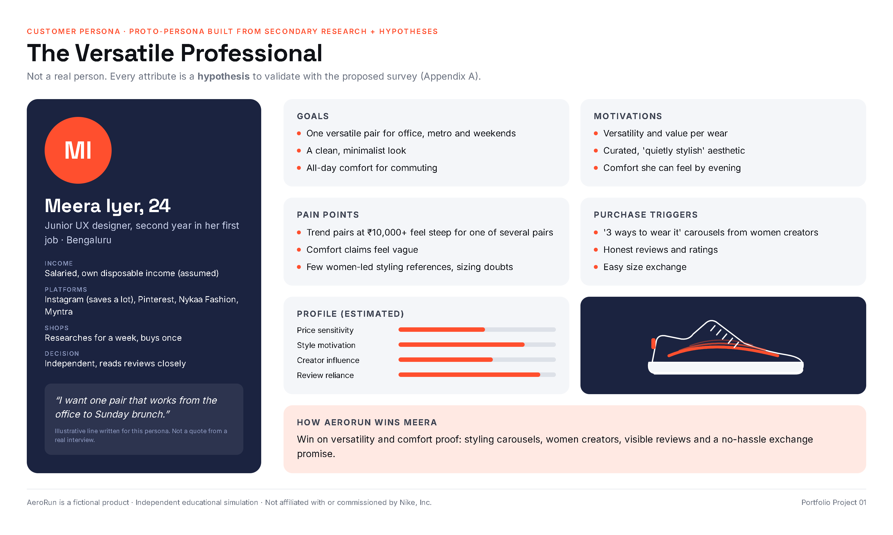
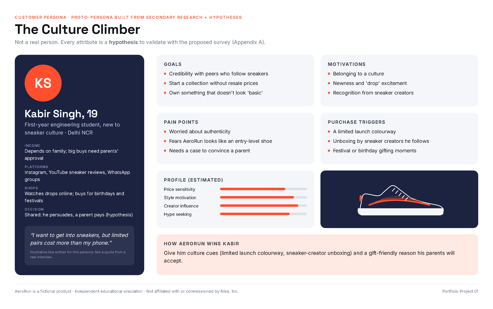
| Persona | Role in the plan | Why |
|---|---|---|
| Aarav: Feed-First Stylist | Primary: most budget and creative | Matches the brief's core (style motivation, Instagram-native, price-aware) and sits where the Gen Z evidence is strongest [S15, S18] |
| Meera: Versatile Professional | Secondary: conversion and retargeting | Has her own income, so she is more likely to convert at ₹5,999, but researches longer, so she responds to reviews and styling |
| Kabir: Culture Climber | Tertiary: content and community | High influence on peers and drives the UGC culture, but a parent often pays (hypothesis), so direct conversion is less likely |
Decision. Make Aarav the primary persona and build the journey map around him.
Alternatives considered. Make Meera primary because she has more spending power; give all three personas equal budget.
Why. Equal budgets would split ₹1 lakh three ways and leave every test too small to read. Aarav is the best match for the brief and the evidence; Meera is the better buyer, so retargeting and reviews are built for her.
Your four starting hypotheses are useful but unproven. Here is how much evidence each has today, and how we'd test it.
| Hypothesis | Existing evidence | Status | How we test it |
|---|---|---|---|
| H1. Fashion creators influence young buyers Hypothesis | Creator spend is large and growing [S19, S20]; Meta-commissioned research says social drives discovery [S16]. Neither shows creators cause sneaker purchases. | Partly supported, indirect | Survey Q8–Q9; A/B test of creator partnership ads vs brand-only ads at equal spend |
| H2. Visual presentation drives discovery Hypothesis | ≈ 70% of Gen Z discover brands online [S15]; short video drives purchase intent (vendor data) [S16]. | Supported for discovery | Hook-rate and cost-per-LPV comparison across the three creative angles |
| H3. Price sensitivity blocks purchase Hypothesis | Gen Z spends about half as much per purchase as millennials [S18]; rivals discount often [S12]. | Supported, but its strength at ₹5,999 is unknown | Van Westendorp price questions (Q11–Q14); add-to-cart vs purchase drop-off |
| H4. Quality, reviews and value perception drive the decision Hypothesis | Fake shoes are among the most-reported counterfeit categories online [S21, S22]. | Supported for trust | Survey Q15–Q16; landing-page test with vs without a trust block |
| Phase | Method | Output | Time |
|---|---|---|---|
| 1. Desk research | Market reports, filings coverage, platform data (this report) | Market context, competitor table | Done |
| 2. Competitor creative audit | Meta Ad Library: log 20 active ads each from Nike, Adidas, Puma and New Balance India (format, hook, offer, CTA) | Creative patterns, white space | 2 days |
| 3. Survey | 15-minute online survey, n ≈ 150 aged 18–25, quotas by city and gender (Appendix A) | Hypotheses validated or rejected; price range | 1 week |
| 4. Interviews | 6–8 short video calls, two per persona | Language for copy; journey corrections | 1 week |
| 5. Social listening | Comments on competitor launch posts; sneaker community threads | Objections in customers' own words | Ongoing |
Decision. Run the survey before launch, even though it costs a week.
Alternatives considered. Launch immediately and let the ad data “do the research”.
Why. Ad data tells you what happened, not why. A survey can test price acceptance and trust triggers cheaply. Finding the same answers through ad spend would use up much of the budget.
Doubt peaks at the Evaluate stage, so that's where the trust budget goes.
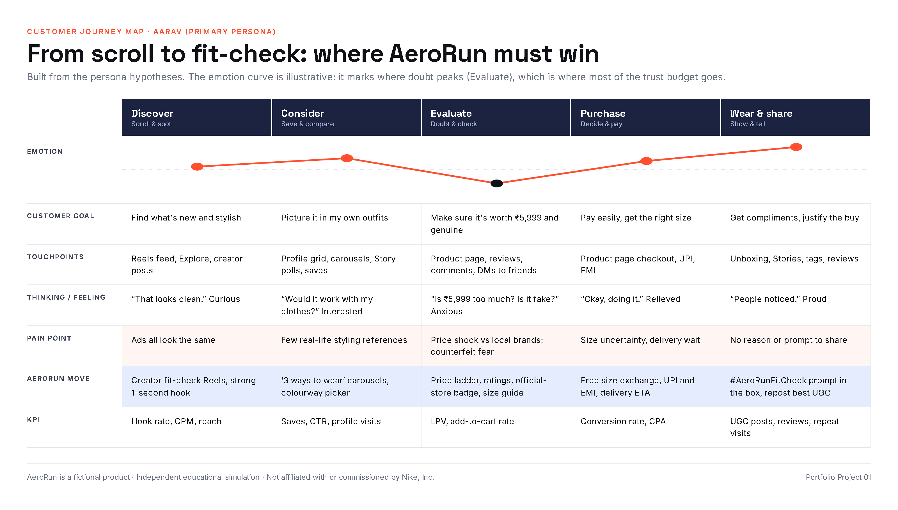
Awareness isn't the hard part; Meta delivers reach cheaply. The risk is at Evaluate, where price shock meets counterfeit fear, so the plan puts low-cost trust devices there: official-store badge, visible reviews and a free size exchange Recommendation.
Strengths and weaknesses describe AeroRun and the campaign; opportunities and threats describe the market.
| Combine | Strategic move |
|---|---|
| Strength × Opportunity | Use brand equity + price gap in creator-led Reels for an audience that discovers online Recommendation |
| Weakness × Opportunity | Offset zero reviews with creator content and fast review collection from first buyers Recommendation |
| Strength × Threat | Defend the price gap with value-adds (free size exchange), not discounts Recommendation |
| Weakness × Threat | Small budget vs fakes: make the official-store badge part of every ad Recommendation |
Own the white space under ₹7,000 for style-first buyers, with a comfort story that keeps AeroRun from looking like ‘the cheap one’.
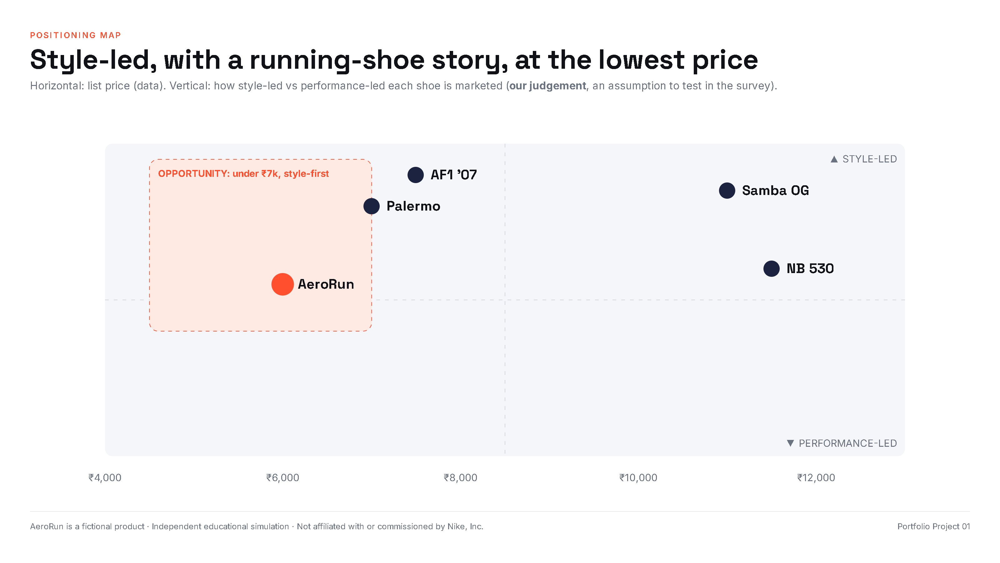
Positioning statement. For style-driven 18–25-year-olds in India's metros who want a recognisable global sneaker without paying ₹10,000+, AeroRun is the lightweight lifestyle runner that delivers iconic-brand style at ₹5,999, because it pairs a clean everyday silhouette with running-derived comfort Assumption.
Value proposition. Looks good in the fit check. Still feels light at 9 pm.
| Reason to believe | Proof we'd show | Label |
|---|---|---|
| Big-brand credibility | Official store, global brand, authenticity badge | Assumption |
| Comfort | Lightweight running-derived foam (an attribute assumed for this simulation) | Assumption |
| Value | Price ladder vs competitors' list prices [S12] | Verified |
| Social proof | Creator styling, then buyer reviews from week 2 | Recommendation |
Brand voice: confident, playful and short. It talks like a friend reviewing your outfit, not like a sports-science lab.
Decision. Position on style plus comfort at an accessible price, never on “cheapest”.
Alternatives considered. (a) Pure performance positioning, as Nike usually does; (b) pure value positioning (“Nike for less”); (c) a hype or limited-drop position.
Why. (a) Contradicts the brief's style motivation. (b) Damages brand equity and invites the ‘cheap Nike’ label. (c) Needs scarcity and budget we don't have. Comfort is the tie-breaker that makes the value story credible.
Five objectives: four performance targets and one learning objective, which is the real point of a test budget.
| # | Objective | KPI | Target | Deadline |
|---|---|---|---|---|
| 1 | Reach | Unique reach, 18–25, six metros | 1,50,000 | End of week 6 |
| 2 | Attention | Hook rate (3-sec views ÷ impressions) on Reels ads | ≥ 25% | Weekly from week 1 |
| 3 | Consideration | Landing-page views at ≤ ₹20 each | 2,400 | End of week 6 |
| 4 | Conversion | Purchases at media CPA ≤ ₹2,000 | 25 | End of week 6 |
| 5 | Learning | Winning creative angle: ≥ 30% lower cost per LPV after ≥ 10,000 impressions each | 1 of 3 angles | End of week 3 |
Every target comes from the base-case model in Section 12 Assumption. Each objective is Specific (one metric), Measurable (Ads Manager or GA4), Achievable (the base case meets it), Relevant (it maps to a funnel stage) and Time-bound (week 3 or week 6).
Decision. Add an explicit learning objective next to the performance targets.
Alternatives considered. Set only sales or ROAS targets.
Why. With about 28 projected sales, any ROAS number is mostly noise. The decision that matters is which angle and audience earn a bigger budget, so the objective has to measure that.
Instagram is where they discover; Facebook adds cheaper reach and retargeting. Everything lands on one product page built for trust.
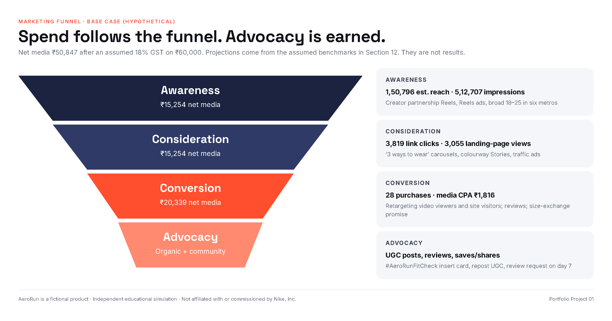
| Channel / placement | Role | Formats | Why |
|---|---|---|---|
| Instagram Reels + Explore | Discovery (primary) | 9:16 creator partnership ads, 15–20 sec | Where the 18–24 audience is largest [S14] |
| Instagram Stories | Consideration + conversion | Colourway polls, swipe-up, last-call | Full-screen, native for retargeting |
| Instagram Feed carousels | Consideration | “3 ways to wear”, price ladder | Saves are a useful intent signal |
| Facebook Feed + Reels | Cheap reach and retargeting | Repurposed Reels, catalogue retargeting | Lower CPMs; also reaches parents for Kabir-style gifting Hypothesis |
| Organic Instagram + UGC | Advocacy | #AeroRunFitCheck reposts | Builds social proof the paid ads can use |
Decision. Keep to Meta only, Instagram-led, with three funnel stages.
Alternatives considered. Add YouTube Shorts, Snapchat or Google Search; or go conversion-only from day one.
Why. ₹50,847 of net media spread over several platforms gives every platform too little data to learn from. A conversion-only setup would need far more purchases than the budget can buy to exit the learning phase [S24]. Brand search on Google is the first channel to add in a scale phase.
One campaign idea, three testable angles, five creators. The test tells us which story the money should follow.
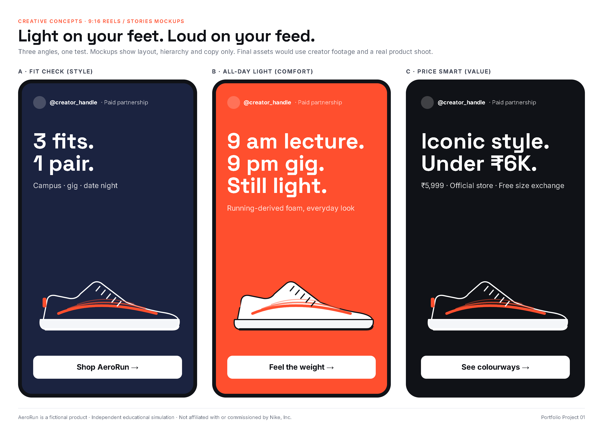
| Angle | Core message | Persona | Hook (first 1–2 seconds) | Proof point |
|---|---|---|---|---|
| A · Fit Check | One pair, every outfit | Aarav | Fast outfit transitions on a beat | Creator styling |
| B · All-Day Light | Comfortable from 9 am to 9 pm | Meera | Time-lapse of one long day | Weight and comfort demo |
| C · Price Smart | Iconic style under ₹6K | Aarav, Kabir | Price tag ‘flip’ against the ladder | List-price comparison |
| Asset | Spec | Notes |
|---|---|---|
| Reels / partnership ads | 9:16, 1080×1920, 15–20 sec, captions burned in | Logo by second 3; product within 1 sec; keep safe zones clear of UI |
| Stories | 9:16, 3 frames, poll or slider sticker | Frame 3 = offer and CTA |
| Carousels | 4:5, 1080×1350, 5 cards | Card 1 is the hook; card 5 is the CTA |
| Creator brief | 1 Reel + 3 Stories, 30-day ad usage rights | Must show: authentic styling, size worn, official store link |
| Pillar | Share | Example |
|---|---|---|
| Style | 40% | “3 fits, 1 pair” Reels, colourway drops |
| Proof | 25% | Comfort test, materials close-up, FAQ on sizing |
| Community | 25% | #AeroRunFitCheck reposts, creator takeovers |
| Offer | 10% | Launch week, free size exchange reminder |
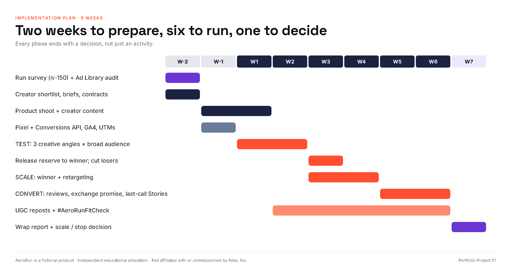
Decision. Five micro-creators instead of one bigger name.
Alternatives considered. One mid-tier or macro creator for the whole ₹25,000; or no creators and brand-made content only.
Why. Five creators give five different audiences and content styles to test, plus usage rights for whitelisted ads. One creator is a single bet with no comparison. Brand-only content gives up the creator-trust signal (H1) the brief asks us to test. Creator fees are an assumption; we'd confirm them with quotes.
How the hypothetical ₹1,00,000 is split, and what it is assumed to buy.
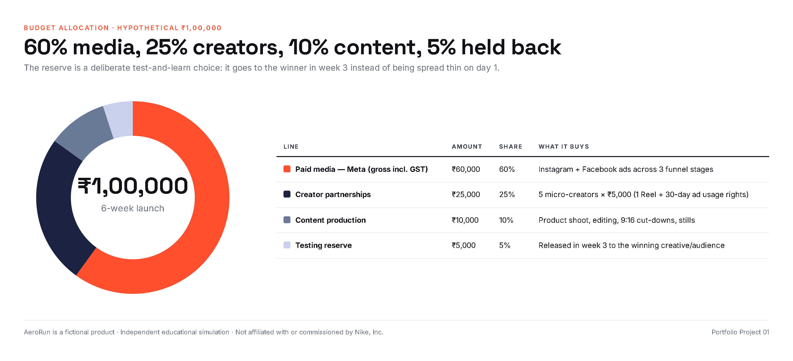
| Stage | Net spend | CPM (assumed) | Impressions | CTR (assumed) | Link clicks | LPVs | CVR (assumed) | Purchases |
|---|---|---|---|---|---|---|---|---|
| Awareness | ₹15,254 | ₹80 | 1,90,675 | 0.40% | 763 | 610 | 0.0% | 0.0 |
| Consideration | ₹15,254 | ₹100 | 1,52,540 | 0.67% | 1,022 | 818 | 0.5% | 4.1 |
| Conversion | ₹20,339 | ₹120 | 1,69,492 | 1.20% | 2,034 | 1,627 | 1.5% | 24.4 |
| Total | ₹50,847 | — | 5,12,707 | 0.74% | 3,819 | 3,055 | — | 28 |
| Scenario | Assumption change | Reach | LPVs | Purchases | Media CPA | Gross revenue | Revenue ÷ total budget |
|---|---|---|---|---|---|---|---|
| Conservative | CPM +25%, CVR −40% | 1,20,637 | 2,444 | 14 | ₹3,632 | ₹83,986 | 0.84× |
| Base | As in the table above | 1,50,796 | 3,055 | 28 | ₹1,816 | ₹1,67,972 | 1.68× |
| Optimistic | CPM −10%, CVR +60% | 1,67,551 | 3,395 | 51 | ₹997 | ₹3,05,949 | 3.06× |
Assumption sources. CPMs sit inside the India range of about ₹50–120 and implied CPCs inside ₹8–25 from a vendor benchmark [S23]. Conversion rates, the 80% landing-page-view rate and the 3.4 frequency are our assumptions. GST treatment depends on Meta's billing entity, and GST-registered advertisers may claim input credit [S25]. Revenue is gross at list price, before GST, returns and product cost, so it isn't profit.
Decision. Allocate 60% to media, 25% to creators, 10% to content and keep 5% in reserve.
Alternatives considered. 90% media with brand-made assets only; or 50/50 media and creators.
Why. Ads are only as good as their creative, and creator content doubles as ad creative through partnership ads. The 5% reserve buys flexibility: it goes to the week-3 winner instead of being guessed on day 1.
Every KPI has a formula, a target, a data source and a pre-agreed action if it misses.
| Stage | KPI | Formula | Target | Source | If off-track |
|---|---|---|---|---|---|
| Awareness | CPM | spend ÷ impressions × 1,000 | ≤ ₹80 (prospecting) | Ads Manager | Broaden audience, refresh creative |
| Awareness | Hook rate | 3-sec views ÷ impressions | ≥ 25% | Ads Manager | Re-cut the first second |
| Awareness | Frequency | impressions ÷ reach | ≤ 3.5 over 6 weeks | Ads Manager | Add creative variants |
| Consideration | Link CTR | link clicks ÷ impressions | ≥ 0.7% blended | Ads Manager | Test new hooks and CTAs |
| Consideration | Cost per LPV | spend ÷ landing-page views | ≤ ₹20 (base ₹15) | Ads Manager + GA4 | Check page speed; shift budget to the winning angle |
| Conversion | Add-to-cart rate | add-to-carts ÷ LPVs | ≥ 8% | Pixel / CAPI + GA4 | Fix sizing info, price framing |
| Conversion | Conversion rate | purchases ÷ LPVs | ≈ 0.9% blended | GA4 | Strengthen the trust block, test the exchange message |
| Conversion | Media CPA | net media ÷ purchases | ≤ ₹2,000 | Ads Manager | Pause bottom 30% of ads |
| Conversion | Media ROAS | revenue ÷ net media | report only (base 3.3×) | Ads Manager | Directional only at this volume |
| Advocacy | UGC volume | #AeroRunFitCheck posts | Track; no target in week 1–6 | Increase prompts, repost more | |
| Advocacy | Review rating | average star rating | ≥ 4.2 / 5 once 20+ reviews | Product page | Investigate fit or quality issues |
Measurement setup: Meta Pixel plus Conversions API, GA4 with UTMs per creator and angle (e.g. utm_content=angleA_creator3), and a weekly dashboard. Attribution: Meta's default 7-day click / 1-day view, read as directional, with GA4 as a cross-check Recommendation.
Decision. Make add-to-cart and cost per LPV the main optimisation signals, with purchases as the final score.
Alternatives considered. Optimise and judge everything on purchases and ROAS.
Why. At about 5 purchases a week, purchase optimisation can't reach the roughly 50 weekly events Meta's learning phase needs [S24]. Add-to-carts (about 33 a week in the base case) and LPVs are frequent enough to give the algorithm a usable signal.
The biggest risks aren't creative. They are statistical (too little data) and trust (fakes and discounting).
| # | Risk | Likelihood | Impact | Mitigation | Early-warning signal |
|---|---|---|---|---|---|
| R1 | Too few conversions to optimise (Meta's learning phase) | High | High | Optimise to ATC/LPV; consolidate ad sets; judge on learning KPIs | ‘Learning limited’ status in week 1 |
| R2 | Competitor discounts erase the price gap | Medium | High | Compete on value-adds (free size exchange), not discounts | Rival sale prices below ₹6,000 in listings |
| R3 | Counterfeit or lookalike ads copy the launch | Medium | Medium | Official-store badge in every ad; report fakes through Meta's IP tools | Comments asking “is this real?” |
| R4 | Creator underperforms or brand-safety issue | Medium | Medium | Five creators instead of one; vet past content; contract approval rights | Low hook rate on one creator's ad |
| R5 | Creative fatigue | High | Medium | 3 angles × 2 cuts each; refresh in week 3 | Frequency > 3.5, CTR falling week on week |
| R6 | Measurement gaps (consent, iOS, view-through credit) | Medium | Medium | CAPI + UTMs + GA4 cross-check | Ads Manager and GA4 differ by > 30% |
| R7 | Survey sample bias (college convenience sample) | High | Low | City and gender quotas; treat as directional | Responses skewed to one city or college |
Run this as a disciplined experiment, decide with pre-set rules, then earn a bigger budget.
15 minutes, n ≈ 150, aged 18–25, six metros. Distributed through college networks and Instagram Stories with quotas. No results are reported here because none exist yet.
| # | Question | Type | Tests |
|---|---|---|---|
| Q1 | Age; city; student or working | Screener | Quotas |
| Q2 | How many pairs of sneakers have you bought in the last 12 months? | Single choice | Category engagement |
| Q3 | What did you pay for your most recent pair? | Price bands | Price anchor |
| Q4 | Where did you first see the last pair you bought? | Multiple choice | H2 discovery |
| Q5 | Rank: style, comfort, price, brand, reviews, durability | Ranking | Motivations |
| Q6 | Which brands would you consider for a ₹5,000–8,000 lifestyle sneaker? | Multi-select | Consideration set |
| Q7 | Show AeroRun concept: describe it in three words | Open | Positioning fit |
| Q8 | Have you bought something after seeing a creator wear or review it? | Yes/No + which | H1 |
| Q9 | Which kind of creator do you trust most for sneakers? | Single choice | H1 creator type |
| Q10 | Which ad would make you tap first? (show A, B, C) | Choice + why | Angle pre-test |
| Q11–Q14 | At what price would AeroRun be: too cheap to trust / a bargain / getting expensive / too expensive? | Van Westendorp | H3 price |
| Q15 | What stops you buying sneakers online? (fakes, fit, returns, price…) | Multi-select | H4 barriers |
| Q16 | Which of these would make you trust an online sneaker purchase? | Multi-select | H4 trust devices |
| Q17 | Who pays for a sneaker purchase like this? | Single choice | Kabir co-decision hypothesis |
Analysis plan: split results by persona-like segment (student vs working, city); compute the Van Westendorp acceptable price range; and update the personas, angle priorities and the ₹5,999 assumption before any media is spent.
All links were accessed in November 2026. The quality column shows how much each source should be trusted.